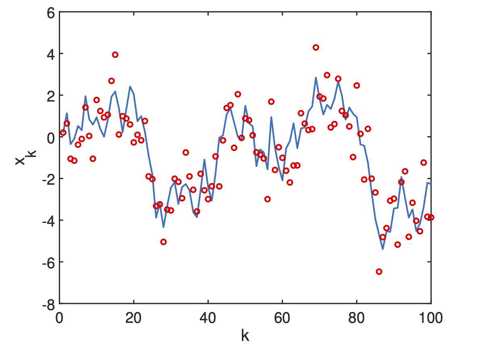
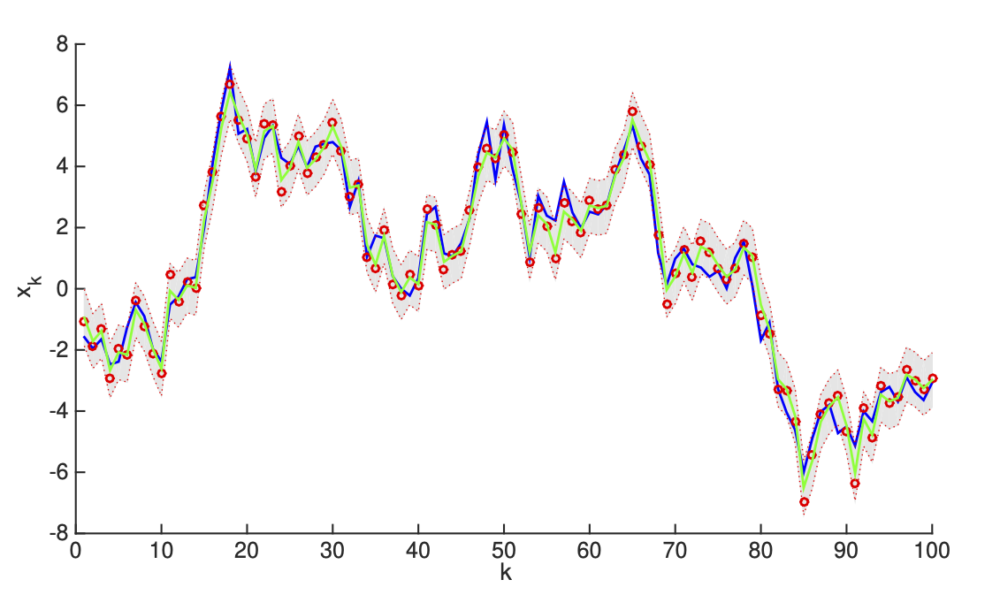

Bayesian Data Assimilation
Data Assimilation
2024-02-14
Bayesian filters
We begin by defining a probabilistic state-space, or nonlinear filtering model, of the form \[\begin{aligned} \mathbf{x}_{k} & \sim p(\mathbf{x}_{k}\mid\mathbf{x}_{k-1}),\label{eq:filter1}\\ \mathbf{y}_{k} & \sim p(\mathbf{y}_{k}\mid\mathbf{x}_{k}),\quad k=0,1,2,\ldots,\label{eq:filter2} \end{aligned} \tag{1}\] where
\(\mathbf{x}_{k}\in\mathbb{R}^{n}\) is the state vector at time \(k,\)
\(\mathbf{y}_{k}\in\mathbb{R}^{m}\) is the observation vector at time \(k,\)
the conditional probability, \(p(\mathbf{x}_{k}\mid\mathbf{x}_{k-1}),\) represents the stochastic dynamics model, and can be a probability density or a discrete probability function, or a mixture of both,
the conditional probability, \(p(\mathbf{y}_{k}\mid\mathbf{x}_{k}),\) represents the measurement model and its inherent noise.
In addition, we assume that the model is Markovian, such that \[p(\mathbf{x}_{k}\mid\mathbf{x}_{1:k-1},\mathbf{y}_{1:k-1})=p(\mathbf{x}_{k}\mid\mathbf{x}_{k-1}),\] and that the observations are conditionally independent of state and measurement histories, \[p(\mathbf{y}_{k}\mid\mathbf{x}_{1:k},\mathbf{y}_{1:k-1})=p(\mathbf{y}_{k}\mid\mathbf{x}_{k}).\]
Example of Gaussian Random Walk
To fix ideas and notation, we begin with a very simple, scalar case, the Gaussian random walk model. This model can then easily be generalized.
Consider the scalar system \[\begin{aligned} x_{k} & =x_{k-1}+w_{k-1},\quad w_{k-1}\sim\mathcal{N}(0,Q),\label{eq:GRW-x}\\ y_{k} & =x_{k}+v_{k},\quad v_{k}\sim\mathcal{N}(0,R),\label{eq:GRW-y} \end{aligned} \tag{2}\] where \(x_{k}\) is the (hidden) state and \(y_{k}\) is the (known) measurement.
Noting that \(x_{k}-x_{k-1}=w_{k-1}\) and that \(y_{k}-x_{k}=v_{k},\) we can immediately rewrite this system in terms of the conditional probability densities, \[\begin{aligned} p(x_{k}\mid x_{k-1}) & =\mathcal{N}\left(x_{k}\mid x_{k-1},Q\right)\\ & =\dfrac{1}{\sqrt{2\pi Q}}\exp\left[-\frac{1}{2Q}\left(x_{k}-x_{k-1}\right)^{2}\right] \end{aligned}\] and
\[\begin{aligned} p(y_{k}\mid x_{k}) & =\mathcal{N}\left(y_{k}\mid x_{k},R\right)\\ & =\dfrac{1}{\sqrt{2\pi R}}\exp\left[-\frac{1}{2R}\left(y_{k}-x_{k}\right)^{2}\right]. \end{aligned}\]
A realization of the model is shown in Figure 1.
Figure 1: Gaussian random walk state space model equations 2. State, \(x_k\) is solid blue curve, measurements, \(y_k\), are red circles. Fixed values of noise variance are \(Q=1\) and \(R=1\)
Code
Nonlinear Filter Model
Using the nonlinear filtering model 1 and the Markov property, we can express the joint prior of the states, \(\mathbf{x}_{0:T}=\{\mathbf{x}_{0},\ldots,\mathbf{x}_{T}\},\) and the joint likelihood of the measurements, \(\mathbf{y}_{1:T}=\{\mathbf{y}_{1},\ldots,\mathbf{y}_{T}\},\) as the products \[p(\mathbf{x}_{0:T})=p(\mathbf{x}_{0})\prod_{k=1}^{T}p(\mathbf{x}_{k}\mid\mathbf{x}_{k-1})\] and \[p(\mathbf{y}_{1:T}\mid\mathbf{x}_{0:T})=\prod_{k=1}^{T}p(\mathbf{y}_{k}\mid\mathbf{x}_{k})\] respectively.
Then, applying Bayes’ law, we can compute the complete posterior distribution of the states as \[p(\mathbf{x}_{0:T}\mid\mathbf{y}_{1:T})=\frac{p(\mathbf{y}_{1:T}\mid\mathbf{x}_{0:T})p(\mathbf{x}_{0:T})}{p(\mathbf{y}_{1:T})}.\label{eq:Bayes-post-state-eq}\]
But this type of complete characterization is not feasible to compute in real-time, or near real-time, since the number of computations per time-step increases as measurements arrive.
What we need is a fixed number of computations per time-step.
This can be achieved by a recursive estimation that, step by step, produces the filtering distribution defined above.
In this light, we can now define the general Bayesian filtering problem, of which Kalman filters will be a special case.
Definition 1 Bayesian filtering is the recursive computation of the marginal posterior distribution, \[p(\mathbf{x}_{k}\mid\mathbf{y}_{1:k})\] known as the filtering distribution, of the state \(\mathbf{x}_{k}\) at each time step \(k,\) given the measurements up to time \(k.\)
Now, based on Bayes’ rule, we can formulate the Bayesian filtering theorem (Särkkä and Svensson 2023) .
Theorem 1 (Bayesian Filter). The recursive equations, known as the Bayesian filter, for computing the filtering distribution \(p(\mathbf{x}_{k}\mid\mathbf{y}_{1:k})\) and the predicted distribution \(p(\mathbf{x}_{k}\mid\mathbf{y}_{1:k-1})\) at the time step \(k,\) are given by the three-stage process:
Initialization: Define the prior distribution \(p(\mathbf{x}_{0}).\)
Prediction: Compute the predictive distribution \[p(\mathbf{x}_{k}\mid\mathbf{y}_{1:k-1})=\int p(\mathbf{x}_{k}\mid\mathbf{x}_{k-1})p(\mathbf{x}_{k-1}\mid\mathbf{y}_{1:k-1})\,\mathrm{d}\mathbf{x}_{k-1}.\]
Correction: Compute the posterior distribution by Bayes’ rule,
\[p(\mathbf{x}_{k}\mid\mathbf{y}_{1:k})=\frac{p(\mathbf{y}_{k}\mid\mathbf{x}_{k})p(\mathbf{x}_{k}\mid\mathbf{y}_{1:k-1})}{\int p(\mathbf{y}_{k}\mid\mathbf{x}_{k})p(\mathbf{x}_{k}\mid\mathbf{y}_{1:k-1})}\,\mathrm{d}\mathbf{x}_{k}.\]
Now, if we assume that the dynamic and measurement models are linear, with i.i.d. Gaussian noise, then we obtain the closed-form solution for the Kalman filter, already derived in the Basic Course. We recall the linear, Gaussian state-space model, \[\begin{aligned} \mathbf{x}_{k} & =\mathbf{M}_{k-1}\mathbf{x}_{k-1}+\mathbf{w}_{k-1},\label{eq:kf-1}\\ \mathbf{y}_{k} & =\mathbf{H}_{k}\mathbf{x}_{k}+\mathbf{v}_{k},\label{eq:kf-2} \end{aligned} \tag{3}\] for the Kalman filter, where
\(\mathbf{x}_{k}\in\mathbb{R}^{n}\) is the state,
\(\mathbf{y}_{k}\in\mathbb{R}^{m}\) is the measurement,
\(\mathbf{w}_{k-1}\sim\mathcal{N}(0,\mathbf{Q}_{k-1})\) is the process noise,
\(\mathbf{v}_{k}\sim\mathcal{N}(0,\mathbf{R}_{k})\) is the measurement noise,
\(\mathbf{x}_{0}\sim\mathcal{N}(\mathbf{m}_{0},\mathbf{P}_{0})\) is the Gaussian distributed initial state, with mean \(\mathbf{m}_{0}\) and covariance \(\mathbf{P}_{0},\)
\(\mathbf{M}_{k-1}\) is the time-dependent transition matrix of the dynamic model at time \(k-1,\) and
\(\mathbf{H}_{k}\) is the time-dependent measurement model matrix.
This model can be very elegantly rewritten in terms of conditional probabilities as \[\begin{aligned} p(\mathbf{x}_{k}\mid\mathbf{x}_{k-1}) & =\mathcal{N}\left(\mathbf{x}_{k}\mid\mathbf{M}_{k-1}\mathbf{x}_{k-1},\mathbf{Q}_{k-1}\right),\\ p(\mathbf{y}_{k}\mid\mathbf{x}_{k}) & =\mathcal{N}\left(\mathbf{y}_{k}\mid\mathbf{H}_{k}\mathbf{x}_{k},\mathbf{R}_{k}\right). \end{aligned}\]
Theorem 2 (Kalman Filter). The Bayesian filtering equations for the linear, Gaussian model Equation 3 can be explicitly computed and the resulting conditional probability distributions are Gaussian. The prediction distribution is \[p(\mathbf{x}_{k}\mid\mathbf{y}_{1:k-1})=\mathcal{N}\left(\mathbf{x}_{k}\mid\hat{\mathbf{m}}_{k},\hat{\mathbf{P}}_{k}\right),\] the filtering distribution is \[p(\mathbf{x}_{k}\mid\mathbf{y}_{1:k})=\mathcal{N}\left(\mathbf{x}_{k}\mid\mathbf{m}_{k},\mathbf{P}_{k}\right)\] and the smoothing distribution is \[p(\mathbf{y}_{k}\mid\mathbf{y}_{1:k-1})=\mathcal{N}\left(\mathbf{y}_{k}\mid\mathbf{H}_{k}\mathbf{\hat{m}}_{k},\mathbf{S}_{k}\right).\]
The parameters of these distributions can be computed by the three-stage Kalman filter loop:
Initialization: Define the prior mean \(\mathbf{m}_{0}\) and prior covariance \(\mathbf{P}_{0}.\)
Prediction: Compute the predictive distribution mean and covariance, \[\begin{aligned} \mathbf{\hat{m}}_{k} & =\mathbf{M}_{k-1}\mathbf{m}_{k-1},\\ \hat{\mathbf{P}}_{k} & =\mathbf{M}_{k-1}\mathbf{P}_{k-1}\mathbf{M}_{k-1}^{\mathrm{T}}+\mathbf{Q}_{k-1}. \end{aligned}\]
Correction: Compute the filtering distribution mean and covariance by first defining \[\begin{aligned} \mathbf{d}_{k} & =\mathbf{y}_{k}-\mathbf{H}_{k}\mathbf{\hat{m}}_{k},\quad\textrm{the innovation},\\ \mathbf{S}_{k} & =\mathbf{H}_{k}\hat{\mathbf{P}}_{k}\mathbf{H}_{k}^{\mathrm{T}}+\mathbf{R}_{k},\quad\textrm{the measurement covariance},\\ \mathbf{K}_{k} & =\hat{\mathbf{P}}_{k}\mathbf{H}_{k}^{\mathrm{T}}\mathbf{S}_{k}^{-1},\quad\textrm{the Kalman gain,} \end{aligned}\]
then finally updating the filter mean and covariance,
\[\begin{aligned} \mathbf{m}_{k} & =\mathbf{\hat{m}}_{k}+\mathbf{K}_{k}\mathbf{d}_{k},\\ \mathbf{P}_{k} & =\hat{\mathbf{P}}_{k}-\mathbf{K}_{k}\mathbf{S}_{k}\mathbf{K}_{k}^{\mathrm{T}}. \end{aligned}\]
Proof. The proof see Särkkä and Svensson (2023) is a direct application of classical results for the joint, marginal, and conditional distributions of two Gaussian random variables, \(\mathbf{x}_{k}\in\mathbb{R}^{n}\) and \(\mathbf{y}_{k}\in\mathbb{R}^{m}.\)
KF for Gaussian Random Walk
We now return to the Gaussian random walk model seen above in the Example, and formulate a Kalman filter for estimating its state from noisy measurements.
Example 1 Kalman Filter for Gaussian Random Walk. Suppose that we have measurements of the scalar \(y_{k}\) from the Gaussian random walk model \[\begin{aligned} x_{k} & =x_{k-1}+w_{k-1},\quad w_{k-1}\sim\mathcal{N}(0,Q),\label{eq:GRW-x2}\\ y_{k} & =x_{k}+v_{k},\quad v_{k}\sim\mathcal{N}(0,R).\label{eq:GRW-y2} \end{aligned} \tag{4}\] This very basic system is found in many applications where
\(x_{k}\) represents a slowly varying quantity that we measure directly.
process noise, \(w_{k},\) takes into account fluctuations in the state \(x_{k}.\)
measurement noise, \(v_{k},\) accounts for measurement instrument errors.
We want to estimate the state \(x_{k}\) over time, taking into account the measurements \(y_{k}.\) That is, we would like to compute the filtering density,
\[p({x}_{k}\mid{y}_{1:k})=\mathcal{N}\left({x}_{k}\mid{m}_{k},{P}_{k}\right).\] We proceed by simply writing down the three stages of the Kalman filter, noting that \(M_{k}=1\) and \(H_{k}=1\) for this model. We obtain:
Initialization: Define the prior mean \({m}_{0}\) and prior covariance \({P}_{0}.\)
Prediction: \[\begin{aligned} {\hat{m}}_{k} & ={m}_{k-1},\\ \hat{{P}}_{k} & ={P}_{k-1}+{Q}. \end{aligned}\]
Correction: Define \[\begin{aligned} {d}_{k} & ={y}_{k}-{\hat{m}}_{k},\quad\textrm{the innovation},\\ {S}_{k} & =\hat{{P}}_{k}+{R},\quad\textrm{the measurement covariance},\\ {K}_{k} & =\hat{{P}}_{k}{S}_{k}^{-1},\quad\textrm{the Kalman gain,} \end{aligned}\]
then update, \[\begin{aligned} {m}_{k} & ={\hat{m}}_{k}+K_{k}{d}_{k},\\ P_{k} & =\hat{P}_{k}-\frac{\hat{P}_{k}^{2}}{S_{k}}. \end{aligned}\]
In Figure 2, we show simulations with system noise standard deviation of \(1\) and measurement noise standard deviation of \(0.5.\) We observe that the KF tracks the random walk very efficiently.

Figure 2: Kalman filter for tracking a Gaussian random walk state space model 4“. State, \(x_k\), is solid blue curve; measurements, \(y_k\), are red circles; Kalman filter estimate is green curve and 95% quantiles are shown. Fixed values of noise variances are \(Q=1\) and \(R=0.5^2\). Results computed by kf_gauss_state.m.
Code
% Kalman Filter for scalar Gaussian random walk
% Set parameters
sig_w = 1; sig_v = 0.5;
M = 1;
Q = sig_w\^2;
H = 1;
R = sig_v\^2;
% Initialize
m0 = 0;
P0 = 1;
% Simulate data
randn('state',1234);
steps = 100; T = \[1:steps\];
X = zeros(1,steps);
Y = zeros(1,steps);
x = m0;
for k=1:steps
w = Q'\*randn(1);
x = M\*x + w;
y = H\*x + sig_v\*randn(1);
X(k) = x;
Y(k) = y;
end
plot(T,X,'-',T,Y,'.');
legend('Signal','Measurements');
xlabel('{k}'); ylabel('{x}\_k');
% Kalman filter
m = m0;
P = P0;
for k=1:steps
m = M\*m;
P = M\*P\*M' + Q;
d = Y(:,k) - H\*m;
S = H\*P\*H' + R;
K = P\*H'/S;
m = m + K\*d;
P = P - K\*S\*K';
kf_m(k) = m;
kf_P(k) = P;
end
% Plot
clf; hold on
fill(\[T fliplr(T)\],\[kf_m+1.96\*sqrt(kf_P) \...
fliplr(kf_m-1.96\*sqrt(kf_P))\],1, \...
'FaceColor',\[.9 .9 .9\],'EdgeColor',\[.9 .9 .9\])
plot(T,X,'-b',T,Y,'or',T, kf_m(1,:),'-g')
plot(T,kf_m+1.96\*sqrt(kf_P),':r',T,kf_m-1.96\*sqrt(kf_P),':r');
hold offNote
Line 3: by modifying these noise amplitudes, one can better understand how the KF operates.
Lines 31-32 and 34-38: the complete filter is coded in only 7 lines, exactly as prescribed by Theorem 5. This is the reason for the excellent performance of the KF, in particular in real-time systems. In higher dimensions, when the matrices become large, more attention must be paid to the numerical linear algebra routines used. The inversion of the measurement covariance matrix, \(S,\) in line 36, is particularly challenging and requires highly tuned decomposition methods.
EXTENDED KALMAN FILTERS
Extended Kalman filters
In real applications, we are usually confronted with nonlinearity in the model and in the measurements.
- Moreover, the noise is not necessarily additive.
To deal with these nonlinearities, one possible approach is to linearize about the current mean and covariance, which produces the extended Kalman filter (EKF).
This filter is widely accepted as the standard for navigation and GPS systems, among others.
Recall the nonlinear problem, \[\begin{aligned} \mathbf{x}_{k} & = & \mathcal{M}_{k-1}(\mathbf{x}_{k-1})+\mathbf{w}_{k-1},\label{eq:state_nl}\\ \mathbf{y}_{k} & = & \mathcal{H}_{k}(\mathbf{x}_{k})+\mathbf{v}_{k},\label{eq:obs_nl} \end{aligned} \tag{5}\] where
\(\mathbf{x}_{k}\in\mathbb{R}^{n},\) \(\mathbf{y}_{k}\in\mathbb{R}^{m},\) \(\mathbf{w}_{k-1}\sim\mathcal{N}(0,\mathbf{Q}_{k-1}),\) \(\mathbf{v}_{k}\sim\mathcal{N}(0,\mathbf{R}_{k}),\)
and now \(\mathcal{M}_{k-1}\) and \(\mathcal{H}_{k}\) are nonlinear functions of \(\mathbf{x}_{k-1}\) and \(\mathbf{x}_{k}\) respectively.
The EKF is then based on Gaussian approximations of the filtering densities, \[p(\mathbf{x}_{k}\mid\mathbf{y}_{1:k})\approx\mathcal{N}\left(\mathbf{x}_{k}\mid\mathbf{m}_{k},\mathbf{P}_{k}\right),\] where these approximations are derived from the first-order truncation of the corresponding Taylor series in terms of the statistical moments of the underlying random variables.
Linearization in the Taylor series expansions will require evaluation of the Jacobian matrices, defined as \[\mathbf{M}_{\mathbf{x}}=\left[\frac{\partial\mathcal{M}}{\partial\mathbf{x}}\right]_{\mathbf{x}=\mathbf{m}}\] and
\[\mathbf{H}_{\mathbf{x}}=\left[\frac{\partial\mathcal{H}}{\partial\mathbf{x}}\right]_{\mathbf{x}=\mathbf{m}}.\]
Theorem 3 The first-order extended Kalman filter with additive noise for the nonlinear system 5 can be computed by the three-stage process:
Initialization: Define the prior mean \(\mathbf{m}_{0}\) and prior covariance \(\mathbf{P}_{0}.\)*
Prediction: Compute the predictive distribution mean and covariance, \[\begin{aligned} \mathbf{\hat{m}}_{k} & =\mathcal{M}_{k-1}(\mathbf{m}_{k-1}),\\ \hat{\mathbf{P}}_{k} & =\mathbf{M}_{\mathbf{x}}(\mathbf{m}_{k-1})\mathbf{P}_{k-1}\mathbf{M}_{\mathbf{x}}^{\mathrm{T}}(\mathbf{m}_{k-1})+\mathbf{Q}_{k-1}. \end{aligned}\]
Correction: Compute the filtering distribution mean and covariance by first defining \[\begin{aligned} \mathbf{d}_{k} & =\mathbf{y}_{k}-\mathcal{H}_{k}(\mathbf{\hat{m}}_{k}),\quad\textrm{the innovation},\\ \mathbf{S}_{k} & =\mathbf{H}_{\mathbf{x}}(\mathbf{\hat{m}}_{k})\hat{\mathbf{P}}_{k}\mathbf{H}_{\mathbf{x}}^{\mathrm{T}}(\mathbf{\hat{m}}_{k})+\mathbf{R}_{k},\thinspace\textrm{the measurement covariance},\\ \mathbf{K}_{k} & =\hat{\mathbf{P}}_{k}\mathbf{H}_{\mathbf{x}}^{\mathrm{T}}(\mathbf{\hat{m}}_{k})\mathbf{S}_{k}^{-1},\quad\textrm{the Kalman gain,} \end{aligned}\]
then finally updating the filter mean and covariance, \[\begin{aligned} \mathbf{m}_{k} & =\mathbf{\hat{m}}_{k}+\mathbf{K}_{k}\mathbf{d}_{k},\\ \mathbf{P}_{k} & =\hat{\mathbf{P}}_{k}-\mathbf{K}_{k}\mathbf{S}_{k}\mathbf{K}_{k}^{\mathrm{T}}. \end{aligned}\]
Proof. The proof see Särkkä and Svensson (2023) is once again a direct application of classical results for the joint, marginal and conditional distributions of two Gaussian random variables, \(\mathbf{x}_{k}\in\mathbb{R}^{n}\) and \(\mathbf{y}_{k}\in\mathbb{R}^{m}.\) In addition, use is made of the Taylor series approximations to compute the Jacobian matrices \(\mathbf{M}_{\mathbf{x}}\) and \(\mathbf{H}_{\mathbf{x}}\) evaluated at \(\mathbf{x}=\mathbf{\hat{m}}_{k-1}\) and \(\mathbf{x}=\mathbf{\hat{m}}_{k}\) respectively.
Extended Kalman filter — non-additive noise
For non-additive noise, the model is now \[\begin{aligned} \mathbf{x}_{k} & =\mathcal{M}_{k-1}(\mathbf{x}_{k-1},\mathbf{w}_{k-1}),\label{eq:state_nl_na}\\ \mathbf{y}_{k} & =\mathcal{H}_{k}(\mathbf{x}_{k},\mathbf{v}_{k}),\label{eq:obs_nl_na} \end{aligned} \tag{6}\] where \(\mathbf{w}_{k-1}\sim\mathcal{N}(0,\mathbf{Q}_{k-1}),\) and \(\mathbf{v}_{k}\sim\mathcal{N}(0,\mathbf{R}_{k})\) are system and measurement Gaussian noises.
In this case the overall three-stage scheme is the same, with necessary modifications to take into account the additional functional dependence on \(\mathbf{w}\) and \(\mathbf{v}.\)
- Initialization:
-
Define the prior mean \(\mathbf{m}_{0}\) and prior covariance \(\mathbf{P}_{0}.\)
- Prediction:
-
Compute the predictive distribution mean and covariance,
\[\begin{aligned} \mathbf{\hat{m}}_{k} & =\mathcal{M}_{k-1}(\mathbf{m}_{k-1},\mathbf{0}),\\ \hat{\mathbf{P}}_{k} & =\mathbf{M}_{\mathbf{x}}(\mathbf{m}_{k-1})\mathbf{P}_{k-1}\mathbf{M}_{\mathbf{x}}^{\mathrm{T}}(\mathbf{m}_{k-1})\\ & +\mathbf{M}_{\mathbf{w}}(\mathbf{m}_{k-1})\mathbf{Q}_{k-1}\mathbf{M}_{\mathbf{w}}^{\mathrm{T}}(\mathbf{m}_{k-1})+\mathbf{Q}_{k-1}. \end{aligned}\]
- Correction:
-
Compute the filtering distribution mean and covariance by first defining \[\begin{aligned} \mathbf{d}_{k} & =\mathbf{y}_{k}-\mathcal{H}_{k}(\mathbf{\hat{m}}_{k},\mathbf{0}),\,\textrm{the}\,\textrm{innovation},\\ \mathbf{S}_{k} & =\mathbf{H}_{\mathbf{x}}(\mathbf{\hat{m}}_{k})\hat{\mathbf{P}}_{k}\mathbf{H}_{\mathbf{x}}^{\mathrm{T}}(\mathbf{\hat{m}}_{k})\\ & +\mathbf{H}_{\mathbf{v}}(\mathbf{\hat{m}}_{k})\mathbf{R}_{k}\mathbf{H}_{\mathbf{v}}^{\mathrm{T}}(\mathbf{\hat{m}}_{k}),\,\textrm{the}\,\textrm{measurement\,covariance},\\ \mathbf{K}_{k} & =\hat{\mathbf{P}}_{k}\mathbf{H}_{\mathbf{x}}^{\mathrm{T}}(\mathbf{\hat{m}}_{k})\mathbf{S}_{k}^{-1},\,\textrm{the}\,\textrm{Kalman\,gain,} \end{aligned}\] then finally updating the filter mean and covariance, \[\begin{aligned} \mathbf{m}_{k} & =\mathbf{\hat{m}}_{k}+\mathbf{K}_{k}\mathbf{d}_{k},\\ \mathbf{P}_{k} & =\hat{\mathbf{P}}_{k}-\mathbf{K}_{k}\mathbf{S}_{k}\mathbf{K}_{k}^{\mathrm{T}}. \end{aligned}\]
EKF — pros and cons
Pros:
Relative simplicity, based on well-known linearization methods.
Maintains the simple, elegant, and computationally efficient KF update equations.
Good performance for such a simple method.
Ability to treat nonlinear process and observation models.
Ability to treat both additive and more general nonlinear Gaussian noise.
Cons:
Performance can suffer in presence of strong nonlinearity because of the local validity of the linear approximation (valid for small perturbations around the linear term).
Cannot deal with non-Gaussian noise, such as discrete-valued random variables.
- Requires differentiable process and measurement operators and evaluation of Jacobian matrices, which might be problematic in very high dimensions.
In spite of this, the EKF remains a solid filter and, as mentioned earlier, remains the basis of most GPS and navigation systems.
EKF Example — nonlinear oscillator
Consider the nonlinear ODE model for the oscillations of a noisy pendulum with unit mass and length \(L,\) \[\frac{\mathrm{d}^{2}\theta}{\mathrm{d}t^{2}}+\frac{g}{L}\sin\theta+w(t)=0\] where
\(\theta\) is the angular displacement of the pendulum,
\(g\) is the gravitational constant,
\(L\) is the pendulum’s length, and
\(w(t)\) is a white noise process.
This is rewritten in state space form, \[\dot{\mathbf{x}}+\mathcal{M}(\mathbf{x})+\mathbf{w}=0,\]
where
\[\begin{aligned} \mathbf{x} & =\left[\begin{array}{c} x_{1}\\ x_{2} \end{array}\right]=\left[\begin{array}{c} \theta\\ \dot{\theta} \end{array}\right],\quad\mathcal{M}(\mathbf{x})=\left[\begin{array}{c} x_{2}\\ -\dfrac{g}{L}\sin x_{1} \end{array}\right],\\ \mathbf{w} & =\left[\begin{array}{c} 0\\ w(t) \end{array}\right]. \end{aligned}\]
Suppose that we have discrete, noisy measurements of the horizontal component of the position, \(\sin(\theta).\)
- Then the measurement equation is scalar, \[y_{k}=\sin\theta_{k}+v_{k},\] where \(v_{k}\) is a zero-mean Gaussian random variable with variance \(R.\)
The system is thus nonlinear in both state and measurement and the state-space system is of the general form 5.
A simple discretization, based on the simplest Euler’s method, produces \[\begin{aligned} \mathbf{x}_{k} & =\mathcal{M}(\mathbf{x}_{k-1})+\mathbf{w}_{k-1}\\ {y}_{k} & =\mathcal{H}_{k}(\mathbf{x}_{k})+{v}_{k}, \end{aligned}\] where \[\begin{aligned} \mathbf{x}_{k} & =\left[\begin{array}{c} x_{1}\\ x_{2} \end{array}\right]_{k},\\ \mathcal{M}(\mathbf{x}_{k-1}) & =\left[\begin{array}{c} x_{1}+\Delta tx_{2}\\ x_{2}-\Delta t\dfrac{g}{L}\sin x_{1} \end{array}\right]_{k-1},\\ \mathcal{H}(\mathbf{x}_{k}) & =[\sin x_{1}]_{k}. \end{aligned}\]
The noise terms have distributions \[\mathbf{w}_{k-1}\sim\mathcal{N}(\mathbf{0},Q),\quad v_{k}\sim\mathcal{N}(0,R),\] where the process covariance matrix is
\[Q=\left[\begin{array}{cc} q_{11} & q_{12}\\ q_{21} & q_{22} \end{array}\right],\] with components (see remark below the example), \[q_{11}=q_{c}\frac{\Delta t^{3}}{3},\quad q_{12}=q_{21}=q_{c}\frac{\Delta t^{2}}{2},\quad q_{22}=q_{c}\Delta t,\] and \(q_{c}\) is the continuous process noise spectral density.
For the first-order EKF higher orders are possiblewe will need the Jacobian matrices of \(\mathcal{M}(\mathbf{x})\) and \(\mathcal{H}(\mathbf{x})\) evaluated at \(\mathbf{x}=\mathbf{\hat{m}}_{k-1}\) and \(\mathbf{x}=\mathbf{\hat{m}}_{k}\) . These are easily obtained here, in an explicit form, \[\mathbf{M}_{\mathbf{x}}=\left[\frac{\partial\mathcal{M}}{\partial\mathbf{x}}\right]_{\mathbf{x}=\mathbf{m}}=\left[\begin{array}{cc} 1 & \Delta t\\ -\Delta t\dfrac{g}{L}\cos x_{1} & 1 \end{array}\right]_{k-1},\]
\[\mathbf{H}_{\mathbf{x}}=\left[\frac{\partial\mathcal{H}}{\partial\mathbf{x}}\right]_{\mathbf{x}=\mathbf{m}}=\left[\begin{array}{cc} \cos x_{1} & 0\end{array}\right]_{k}.\]
For the simulations, we take:
500 time steps with \(\Delta t=0.01.\)
Noise levels \(q_{c}=0.01\) and \(R=0.1.\)
Initial angle \(x_{1}=1.8\) and initial angular velocity \(x_{2}=0.\)
Initial diagonal state covariance of \(0.1.\)
Results are plotted in Figure Figure 3.
- We notice that despite the very noisy, nonlinear measurements, the EKF rapidly approaches the true state and then tracks it extremely well.
Figure 3: Extended Kalman filter for tracking a noisy pendulum model, where horizontal position is measured. State, \(x_k\), $is solid blue curve; measurements, \(y_k\), are red circles; extended Kalman filter estimate is green curve. Results computed by EKfPendulum.m
Note
In the above example, we have used a rather special form for the process noise covariance, \(Q.\) It cannot be computed exactly for nonlinear systems and some kind of approximations are needed.1 One way is to use an Euler-Maruyama method from SDEs, but this leads to singular dynamics where the particle smoothers will not work. Another approach, which was used here, is to first construct an approximate model and then compute the covariance using that model. In this case the approximate model was taken as \[\ddot{x}=w(t),\] which is maybe overly simple, but works. Then the matrix \(Q\) is propagated through this simplified dynamics using an integration factor (exponential) solution and the corresponding power series expression of the transition matrix. Details of this can be found in [Grewal; Andrews].
Unscented Kalman filters
The unscented Kalman filter (UKF) was developed to overcome two shortcomings of the EKF:
its difficulty to treat strong nonlinearities and
its reliance on the computation of Jacobians.
The UKF is based on the unscented transform (UT), a method for approximating the distribution of a transformed variable, \[\mathbf{y}=g(\mathbf{x}),\] where \(\mathbf{x}\sim\mathcal{N}(\mathbf{m},\mathbf{P}),\) without linearizing the function \(g.\)
The UT is computed as follows:
Choose a collection of so-called\(\sigma\)-pointsthat reproduce the mean and covariance of the distribution of \(\mathbf{x}\).
Apply the nonlinearfunction to the \(\sigma\)-points.
Estimate themean and variance of the transformed random variable.
This is a deterministic sampling approach, as opposed to Monte Carlo, particle filters, and ensemble filters that all use randomly sampled points. Note that the first two usually require orders of magnitude more points than the UKF.
Suppose that the random variable \(\mathbf{x}\in\mathbb{R}^{n}\) with mean \(\mathbf{m}\) and covariance \(\mathbf{P}.\) Compute \(N=2n+1\) \(\sigma\)-points and their corresponding weights \[\{\mathbf{x}^{(\pm i),},w^{(\pm i)}\},\quad i=0,1,\ldots,N\] by the formulas
\[\begin{aligned} \mathbf{x}^{(0)} & =\mathbf{m},\\ \mathbf{x}^{(\pm i)} & =\mathbf{m}\pm\sqrt{n+\lambda}\,\mathbf{p}^{(i)},\quad i=1,2,\ldots,n,\\ w^{(0)} & =\frac{\lambda}{n+\lambda},\\ w^{(\pm i)} & =\frac{\lambda}{2\left(n+\lambda\right)},\quad i=1,2,\ldots,n, \end{aligned}\] where
\(\mathbf{p}_{i}\) is the \(i\)-th column of the square root of \(\mathbf{P},\) which is the matrix \(S\) such that \(SS^{\mathrm{T}}=\mathbf{P},\) sometimes denoted as \(\mathbf{P}^{1/2},\)
\(\lambda\) is a scaling parameter, defined as \[\lambda=\alpha^{2}(n+\kappa)-n,\quad0<\alpha<1,\]
\(\alpha\) and \(\kappa\) describe the spread of the \(\sigma\)-points around the mean, with \(\kappa=3-n\) usually,
\(\beta\) is used to include prior information on non-Gaussian distributions of \(\mathbf{x}.\)
For the covariance matrix, the weight \(w^{(0)}\) is modified to \[w^{(0)}=\frac{\lambda}{n+\lambda}+\left(1-\alpha^{2}+\beta\right).\] These points and weights ensure that the means and covariances are consistently captured by the UT.
UKF — algorithm
Theorem 4 The UKF for the nonlinear system 5 computes a Gaussian approximation of the filtering distribution \[p(\mathbf{x}_{k}\mid\mathbf{y}_{1:k})\approx\mathcal{N}\left(\mathbf{x}_{k}\mid\mathbf{m}_{k},\mathbf{P}_{k}\right),\] based on the UT, following the three-stage process:
Initialization: Define the prior mean \(\mathbf{m}_{0},\) prior covariance \(\mathbf{P}_{0}\) and the parameters \(\alpha,\) \(\beta,\) \(\kappa.\)
Prediction:
Compute the \(\sigma\)-points and weights, \[\begin{aligned} \mathbf{x}_{k-1}^{(0)} & =\mathbf{m}_{k-1},\\ \mathbf{x}_{k-1}^{(\pm i)} & =\mathbf{m}_{k-1}\pm\sqrt{n+\lambda}\,\mathbf{p}_{k-1}^{(i)},\quad i=1,2,\ldots,n,\\ w^{(0)} & =\frac{\lambda}{n+\lambda},\quad w^{(\pm i)} =\frac{\lambda}{2\left(n+\lambda\right)},\quad i=1,2,\ldots,n. \end{aligned}\]
Propagate the \(\sigma\)-points through the dynamic model \[\tilde{\mathbf{x}}_{k}^{(i)}=\mathcal{M}_{k-1}\left(\mathbf{x}_{k-1}^{(i)}\right).\]
Compute the predictive distribution mean and covariance, \[\begin{aligned} \mathbf{m}_{k}^{-} & =\sum_{i=0}^{\pm n}w^{(i)}\tilde{\mathbf{x}}_{k}^{(i)}\\ \mathbf{P}_{k}^{-} & =\sum_{i=0}^{\pm n}w^{(i)}\left(\tilde{\mathbf{x}}_{k}^{(i)}-\mathbf{m}_{k}^{-}\right)\left(\tilde{\mathbf{x}}_{k}^{(i)}-\mathbf{m}_{k}^{-}\right)^{\mathrm{T}}+\mathbf{Q}_{k-1}. \end{aligned}\]
Correction:
Compute the updated \(\sigma\)-points and weights, \[\begin{aligned} \mathbf{x}_{k}^{(0)} & =\mathbf{m}_{k}^{-},\\ \mathbf{x}_{k}^{(\pm i)} & =\mathbf{m}_{k}^{-}\pm\sqrt{n+\lambda}\,\mathbf{p}_{k}^{(i)-},\quad i=1,2,\ldots,n,\\ w^{(0)} & =\frac{\lambda}{n+\lambda}+\left(1-\alpha^{2}+\beta\right),\\ w^{(\pm i)} & =\frac{\lambda}{2\left(n+\lambda\right)},\quad i=1,2,\ldots,n. \end{aligned}\]
Propagate the updated \(\sigma\)-points through the measurement model \[\tilde{\mathbf{y}}_{k}^{(i)}=\mathcal{H}_{k}\left(\mathbf{x}_{k}^{(i)}\right).\]
Compute the predicted mean and innovation, predicted measurement covariance, state-measurement cross-covariance, and filter gain, \[\begin{aligned} \boldsymbol{\mu}_{k} & =\sum_{i=0}^{\pm n}w^{(i)}\tilde{\mathbf{y}}_{k}^{(i)},\quad\textrm{the mean,}\\ \mathbf{d}_{k} & =\mathbf{y}_{k}-\boldsymbol{\mu}_{k},\quad\textrm{the innovation,}\\ \mathbf{S}_{k} & =\sum_{i=0}^{\pm n}w^{(i)}\left(\tilde{\mathbf{y}}_{k}^{(i)}-\boldsymbol{\mu}_{k}\right)\left(\tilde{\mathbf{y}}_{k}^{(i)}-\boldsymbol{\mu}_{k}\right)^{\mathrm{T}}+\mathbf{R}_{k},\textrm{ measur cov}\\ \mathbf{C}_{k} & =\sum_{i=0}^{\pm n}w^{(i)}\left({\mathbf{x}}_{k}^{(i)}-\mathbf{m}_{k}^{-}\right)\left(\tilde{\mathbf{y}}_{k}^{(i)}-\boldsymbol{\mu}_{k}\right)^{\mathrm{T}},\textrm{ s-m cross-cov},\\ \mathbf{K}_{k} & =\mathbf{C}_{k}\mathbf{S}_{k}^{-1},\quad\textrm{the Kalman gain.} \end{aligned}\]
Finally, update the filter mean and covariance, \[\begin{aligned} \mathbf{m}_{k} & =\mathbf{\hat{m}}_{k}+\mathbf{K}_{k}\mathbf{d}_{k},\\ \mathbf{P}_{k} & =\hat{\mathbf{P}}_{k}-\mathbf{K}_{k}\mathbf{S}_{k}\mathbf{K}_{k}^{\mathrm{T}}. \end{aligned}\]
Just as was the case with the EKF, the UKF can also be applied to the non-additive noise model 6.
- This is achieved by applying a non-additive version of the UT. Details can be found in (Särkkä and Svensson 2023).
Particle filters
What happens if both the models are nonlinear and the pdfs are non Gaussian?
The Kalman filter and its extensions are no longer optimal and, more importantly, can easily fail the estimation process. Another approach must be used.
A promising candidate is the particle filter (PF)
The particle filter (Doucet, Johansen, et al. 2009) (and references therein) works sequentially in the spirit of the Kalman filter, but unlike the latter, it handles an ensemble of states (the particles) whose distribution approximates the pdf of the true state.
Bayes’ rule and the marginalization formula, \[p(x)=\int p(x\mid y)p(y)\,\mathrm{d}y,\] are explicitly used in the estimation process.
The linear and Gaussian hypotheses can then be ruled out, in theory.
In practice though, the particle filter cannot yet be applied to very high dimensional systems (this is often referred to as “the curse of dimensionality”). Though recent work by [Friedemann, Raffin2023] has improved this by sophisticated parallel computing.
Particle filters are methods for obtaining Monte Carlo approximationsof the solutions of the Bayesian filtering equations.
Rather than trying to compute the exact solution of the Bayesian filtering equations, the transformations of such filtering (Bayes’ rule for the analysis, model propagation for the forecast) are applied to the members of the sample.
The statistical moments are meant to be those of the targeted pdf.
Obviously this sampling strategy can only be exact in the asymptotic limit; that is, in the limit where the number of members (or particles) goes to infinity.
The most popular and simple algorithm of Monte Carlo type that solves the Bayesian filtering equations is called the bootstrap particle filter. It is computed by a three-stage process.
- Sampling
-
We consider a sample of particles \(\left\{ \mathbf{x}_{1},\mathbf{x}_{2},\ldots,\mathbf{x}_{M}\right\}\). The related probability density function at time \(t_{k}\) is \(p_{k}(\mathbf{x}),\) where \[p_{k}(\mathbf{x})\simeq\sum_{i=1}^{M}\omega_{i}^{k}\delta(\mathbf{x}-\mathbf{x}_{k}^{i})\] and \(\delta\) is the Dirac mass and the sum is meant to be an approximation of the exact density that the samples emulate. A positive scalar, \(\omega_{k}^{i},\) weights the importance of particle \(i\) within the ensemble. At this stage, we assume that the weights \(\omega_{i}^{k}\) are uniform and \(\omega_{i}^{k}=1/M\)
- Forecast
-
At the forecast step, the particles are propagated by the model without approximation, \[p_{k+1}(\mathbf{x})\simeq\sum_{i=1}^{M}\omega_{k}^{i}\delta(\mathbf{x}-\mathbf{x}_{k+1}^{i}),\] with \(\mathbf{x}_{k+1}^{i}=\mathcal{M}_{k+1}(\mathbf{x}_{k}).\) A stochastic noise can optionally be added to the dynamics of each particle.
- Analysis
-
The analysis step of the particle filter is extremely simple and elegant. The rigorous implementation of Bayes’ rule ascribes to each particle a statistical weight that corresponds to the likelihood of the particle given the data. The weight of each particle is updated according to \[\omega_{k+1}^{\mathrm{a},i}\propto\omega_{k+1}^{\mathrm{f},i}p(\mathbf{y}_{k+1}|\mathbf{x}_{k+1}^{i})\,.\] It is remarkable that the analysis is carried out with only a few multiplications. It does not involve inverting any system or matrix, as opposed for instance to the Kalman filter.
Choosing a Filter
One usually has to choose between
linear Kalman filters
ensemble Kalman filters
nonlinear filters
hybrid variational-filter methods.
These questions are resumed in the following Table:
| Estimator | Model type | CPU-time | |
|---|---|---|---|
| KF | linear | Gaussian | low |
| EKF | locally linear | Gaussian | low-medium |
| UKF | nonlinear | Gaussian | medium |
| EnKF | nonlinear | Gaussian | medium-high |
| PF | nonlinear | non-Gaussian | high |
Codes
Various open-source repositories and codes are available for both academic and operational data assimilation.
DARC: https://research.reading.ac.uk/met-darc/ from Reading, UK.
DAPPER: https://github.com/nansencenter/DAPPER from Nansen, Norway.
DART: https://dart.ucar.edu/ from NCAR, US, specialized in ensemble DA.
OpenDA: https://www.openda.org/.
Verdandi: http://verdandi.sourceforge.net/ from INRIA, France.
PyDA: https://github.com/Shady-Ahmed/PyDA, a Python implementation for academic use.
Filterpy: https://github.com/rlabbe/filterpy, dedicated to KF variants.
EnKF; https://enkf.nersc.no/, the original Ensemble KF from Geir Evensen.